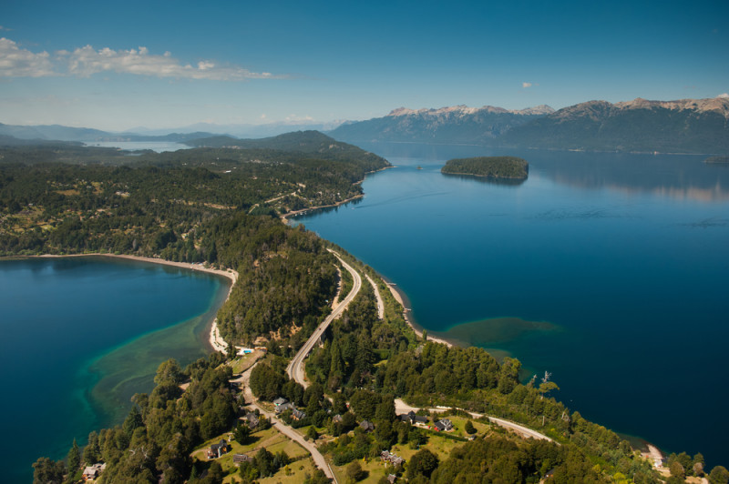

El sur argentino, un vasto y cautivador territorio, atrae a viajeros de todo el mundo con su incomparable belleza natural y su rica herencia cultural. Desde los majestuosos picos de los Andes hasta las serenas aguas del Atlántico Sur, esta región ofrece una experiencia única que combina paisajes impresionantes, actividades al aire libre y una calidez humana incomparable. La Patagonia, una de las joyas del sur argentino, es un paraíso para los amantes de la naturaleza. Aquí, los visitantes pueden explorar glaciares imponentes, como el famoso Perito Moreno en el Parque Nacional Los Glaciares, o maravillarse con la belleza escénica del Parque Nacional Nahuel Huapi, hogar de lagos cristalinos y bosques frondosos. Además, los aventureros pueden disfrutar de emocionantes actividades como senderismo, kayak, pesca y avistamiento de fauna, desde ballenas en Península Valdés hasta pingüinos en Punta Tombo. La región sur de Argentina también es rica en cultura e historia. En ciudades como Bariloche, conocida como la "Suiza argentina", los visitantes pueden deleitarse con delicias culinarias como el famoso chocolate artesanal y explorar encantadores pueblos alpinos. En Ushuaia, la ciudad más austral del mundo, los turistas pueden embarcarse en expediciones hacia la Antártida o visitar el Museo del Presidio para aprender sobre la fascinante historia de la colonización en el extremo sur. En resumen, el sur argentino es un destino turístico único que combina la majestuosidad de la naturaleza con la calidez de su gente y la riqueza de su historia. Es un lugar donde los viajeros pueden desconectar del bullicio de la vida cotidiana y sumergirse en la serenidad de paisajes inolvidables.
Este impresionante glaciar, ubicado en la provincia de Santa Cruz, es uno de los más famosos del mundo y una visita obligada en el sur argentino. Con sus enormes paredes de hielo que se elevan sobre el Lago Argentino, el Perito Moreno ofrece espectáculos naturales únicos, con frecuentes desprendimientos de enormes bloques de hielo que caen al agua con estruendo, creando un espectáculo visual y sonoro inolvidable.
 Ushuaia, la ciudad más austral del mundo, es el punto de partida para explorar la belleza salvaje de
la Tierra del Fuego. Un paseo en barco por el Canal Beagle permite a los visitantes maravillarse con
paisajes de ensueño, como el Faro Les Eclaireurs y la Isla de los Lobos, mientras se sumergen en la
historia marítima de la región. Además, Ushuaia ofrece una variedad de actividades, desde senderismo
en el Parque Nacional Tierra del Fuego hasta excursiones en 4x4 por la estepa patagónica.
Ushuaia, la ciudad más austral del mundo, es el punto de partida para explorar la belleza salvaje de
la Tierra del Fuego. Un paseo en barco por el Canal Beagle permite a los visitantes maravillarse con
paisajes de ensueño, como el Faro Les Eclaireurs y la Isla de los Lobos, mientras se sumergen en la
historia marítima de la región. Además, Ushuaia ofrece una variedad de actividades, desde senderismo
en el Parque Nacional Tierra del Fuego hasta excursiones en 4x4 por la estepa patagónica.
Ubicada en la provincia de Río Negro, Bariloche es conocida por su belleza alpina, sus encantadoras calles y su deliciosa gastronomía, especialmente su famoso chocolate. Además, desde Bariloche, se puede emprender la ruta hacia los Siete Lagos, un recorrido panorámico que atraviesa paisajes de montaña, lagos de aguas cristalinas y bosques frondosos, ofreciendo innumerables oportunidades para actividades al aire libre y fotografías impresionantes. 
Prepárate para cambios climáticos abruptos: El clima en el sur argentino puede ser impredecible, especialmente en regiones como la Patagonia. Asegúrate de empacar ropa adecuada para todas las estaciones, incluyendo capas que puedas añadir o quitar según sea necesario. También es importante llevar un buen abrigo, especialmente si planeas visitar glaciares o hacer actividades al aire libre.
Reserva con anticipación durante la temporada alta: Durante los meses de verano (diciembre a febrero), muchos destinos en el sur argentino, como Bariloche y Ushuaia, pueden estar muy concurridos. Para evitar sorpresas desagradables, especialmente en alojamientos y tours populares, es recomendable reservar con anticipación, especialmente si viajas en temporada alta.
Explora la gastronomía local: La región sur de Argentina ofrece una deliciosa variedad de platos típicos que reflejan su rica cultura y tradiciones culinarias. No te pierdas la oportunidad de probar el cordero patagónico asado, las truchas frescas de los lagos y ríos locales, y los exquisitos chocolates artesanales de Bariloche. Explorar la gastronomía local es una experiencia enriquecedora que complementará tu viaje.
Respeta la naturaleza y el entorno: El sur argentino es hogar de paisajes naturales impresionantes y una biodiversidad única. Es fundamental respetar y preservar estos entornos delicados durante tu visita. Sigue las normas establecidas en los parques nacionales y áreas protegidas, lleva contigo toda la basura que generes y evita perturbar la vida silvestre.
Ten en cuenta los tiempos de desplazamiento: Debido a las vastas distancias y las condiciones de las carreteras en algunas zonas del sur argentino, los tiempos de desplazamiento pueden ser más largos de lo esperado. Planifica tus viajes con tiempo suficiente y sé flexible en tu itinerario para adaptarte a posibles contratiempos, como condiciones climáticas adversas o obras en la carretera.
Interactúa con la comunidad local: Una de las mejores maneras de enriquecer tu experiencia de viaje en el sur argentino es interactuar con la comunidad local. Ya sea charlando con lugareños en mercados artesanales, participando en actividades culturales o tomando clases de cocina regional, conocer la vida y las tradiciones locales te brindará una perspectiva más profunda y significativa de la región.